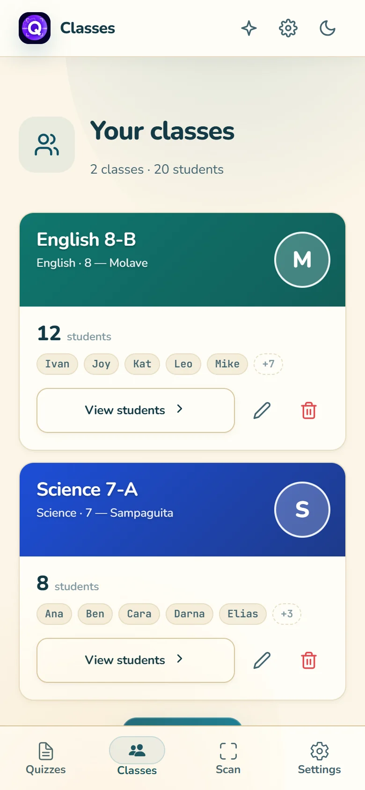
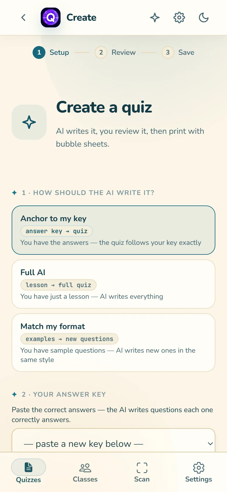
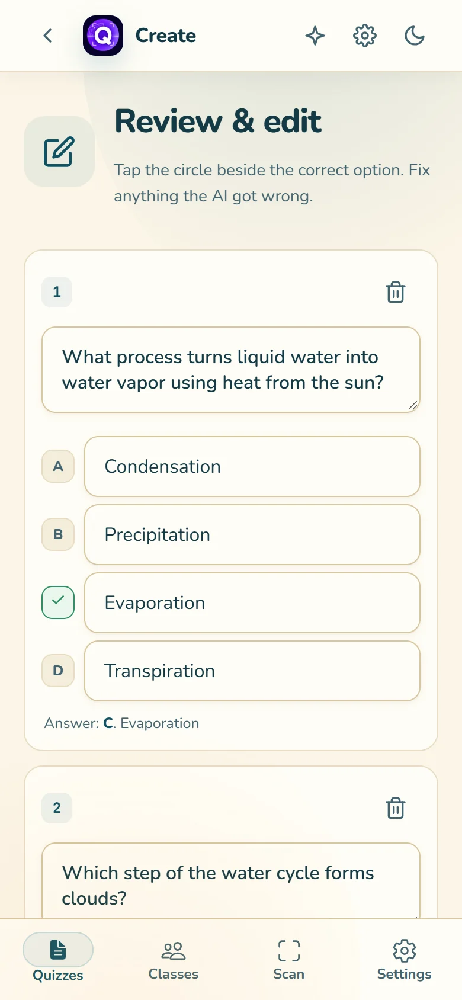
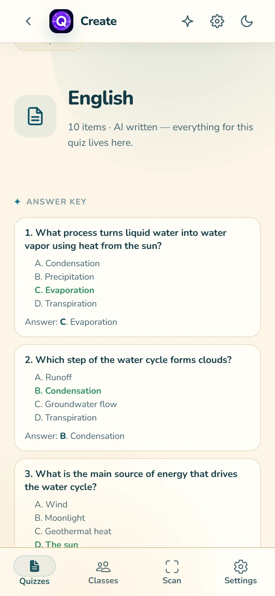
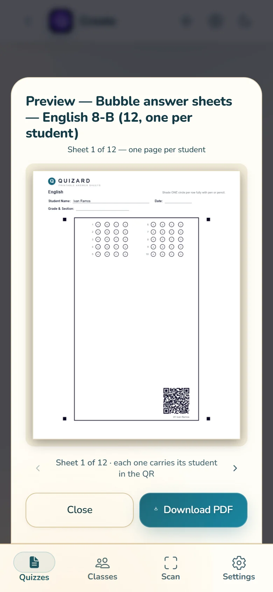
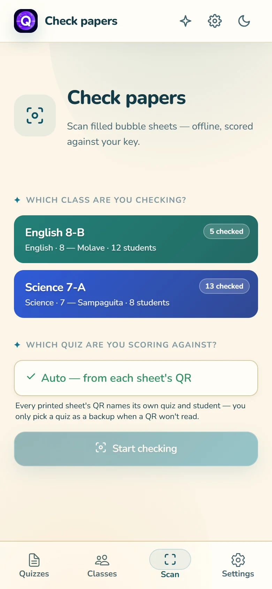
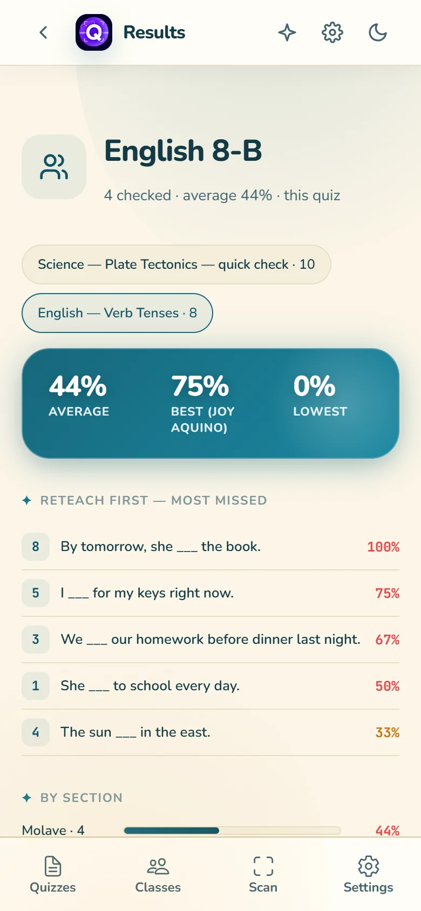

Classes & rosters
Paste names or upload a .txt/.csv. Student numbers stay stable across edits, and every sheet belongs to a real student.
Turn your answer key or lesson into printable bubble sheets, then scan them with your phone. Quizard scores everything on-device — no internet, no data uploaded, no grading pile.
Every core step runs on the device: rosters, answer keys, quiz building, printing, scanning, scoring, and results. AI is a separate, optional extra — never a requirement.
Quizard is a paper-quiz workstation: build the quiz, print the sheets, scan the answers, and see what to reteach — all on one device.
Paste names or upload a .txt/.csv. Student numbers stay stable across edits, and every sheet belongs to a real student.
Anchor to my key follows your answers exactly, Full AI writes from a lesson, and Match my format copies your sample questions.
One page per student, with four corner markers and a QR that carries the quiz and student name. Letter, A4, or Long paper.
Use the camera or check a photo. Blank, multiple, and faint marks are flagged for you, and the QR attaches the student automatically.
Class average, best and lowest, most-missed questions, section breakdown, and score distribution — with CSV and PDF exports.
Rosters, quizzes, photos and scores live in your device's storage. AI is optional and only sends the lesson text you choose to use.
Real screens from the current app, using the built-in demo class. Swipe through on a phone.







Paste your roster or upload a text/CSV list. Quizard assigns a stable number to each student.
Paste an answer key, drop in a PDF/PPTX/DOCX, or use sample questions you already wrote.
Check the questions and correct answers, then print a sheet for every student.
Use the camera or a photo. Quizard aligns the sheet, reads the QR, and scores each bubble.
Scores attach to the right student. Open results to see averages and the questions to reteach.
All five steps work offline. AI is only used when you choose Full AI or Match my format — an answer key never needs it.
Open the web app to test it with your own lesson — no install needed. When you want the full offline app for class, download the Android APK.
Works in Chrome, Edge, or Safari. No account and no install required.
Download the Android APK for a fully bundled app that works without internet.
Open it in the browser and run through the workflow with one of your lessons. Nothing to install.
Optional: install it as an app
The installed web app also works offline after its first visit. Needs HTTPS and a modern browser; iOS 15+ is supported.
Choose this when you want Quizard ready for class without relying on a connection. The APK bundles the whole app on your phone.
Version 2.0.0 · Android 7.0+ · about 9.4 MB. Sideloaded APKs do not auto-update; download the latest release when a new version is out.
Open a topic for the practical rules behind the screens.
Lessons can be PDF, DOCX, PPTX, TXT, or MD. Text is extracted locally in your browser or app — the file is never uploaded.
Paste any of these into Keys or “Anchor to my key”:
1. PhotosynthesisWhat do plants use? → PhotosynthesisBCADB…1. B. Data Integrity* on the correct option or an Answer: B. … lineThe parser counts answers and warns when a saved key has no correct answers.
You can edit every question, choice, and correct answer in Review before saving.
Quizard prints a preview you can page through and download as a PDF.
Rosters, saved keys, quizzes, printing, scanning, results, and reports work offline. AI generation needs the internet.
Profiles, classes, keys, quizzes, scanned sheets, and scores are stored on your device. There is no Quizard account and no analytics.
Settings supports separate profiles for different teachers or classes, each with its own data. A 4-digit PIN is optional and stored as a salted hash.
Use the profile picker to switch; each profile's classes and results stay separate.
Yes, for everything except AI generation: classes, keys, saved quizzes, printing, scanning, results, and reports all run on the device. AI modes and cloud sync need a connection.
No. Profiles are local to the device. There is no email, password, or Quizard account.
Quizard extracts selectable text, not images. A scanned or photographed PDF has no text layer, so it returns an error instead of inventing content. Paste the lesson text or use a text-based file.
Allow camera access for the site or app. On the web, camera access requires HTTPS. If the camera still fails, use Check from photo and pick a picture instead.
Fill the frame with the sheet, keep it flat, avoid shadows, and make sure all four corner squares and the full black frame are visible. You can also pick the quiz manually and attach the student on the result screen.
The QR names a quiz that isn't saved here — it may have been printed on another phone or deleted. Save the quiz on the scanning device, or pick the quiz manually on the scan screen.
Full AI and Match my format send your lesson text to the AI. Use an answer key instead if you need to work offline; a letters-only key needs no AI.
Up to 50, with four choices (A–D) per question. Short quizzes can print in one or two columns.
Android blocks installs from unknown sources by default. When the prompt appears, allow installs from the browser or file manager you used, then try again. Quizard requires Android 7.0 or newer.
The web app updates itself in the background; a reload may be requested when a new version is ready. The APK does not auto-update — download the latest release and install it over the old version.
Build a quiz, print the sheets, and let the phone do the checking.